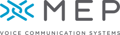

---
# Copyright 2025 seL4 Project a Series of LF Projects, LLC.
# SPDX-License-Identifier: CC-BY-SA-4.0
title: MEP joins the seL4 Foundation
anchor: member-mep
---

<p>
    <a href="https://www.mep-info.com/">
    
    </a>
    The seL4 Foundation is pleased to welcome <a href="https://www.mep-info.com/">MEP</a> as a <a href="../Foundation/Membership">Member</a>. MEP is a voice communications supplier for Air Traffic and Maritime critical communications worldwide. Its Voice Communication System, the <a href="https://www.mep-info.com/products/surevoice-solid">SureVoice Solid</a>, runs on seL4 at its heart. MEP has chosen seL4 for process separation to achieve 24/7 availability.
</p>
